はだかの王さま
城のまわりには町が広がっていました。とても大きな町で、いつも活気に満ちていました。世界中のあちこちから知らない人が毎日、おおぜいやって来ます。
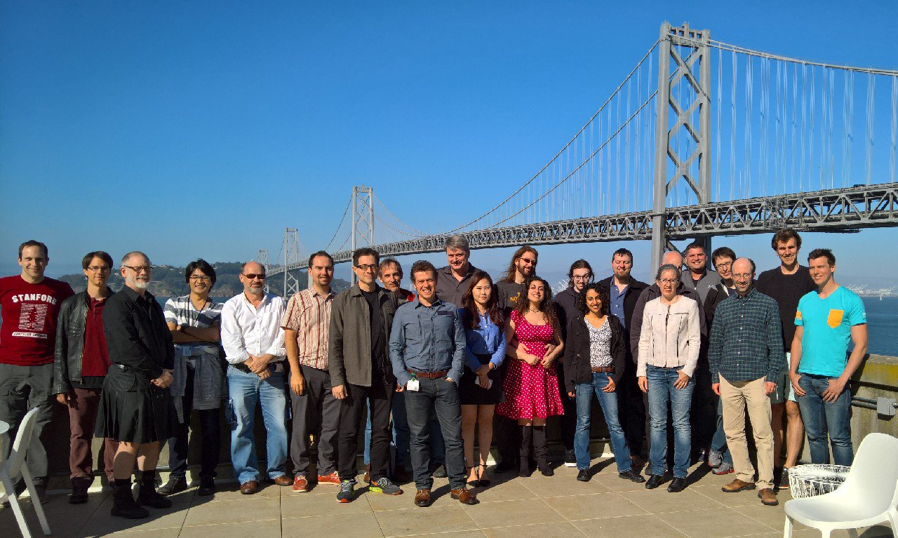
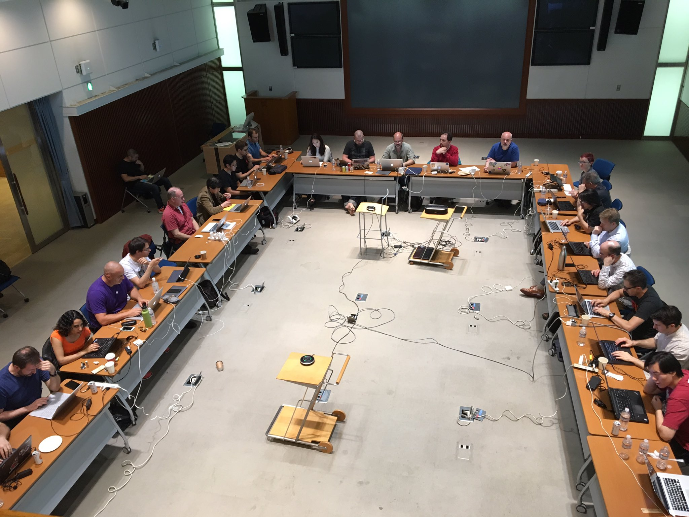
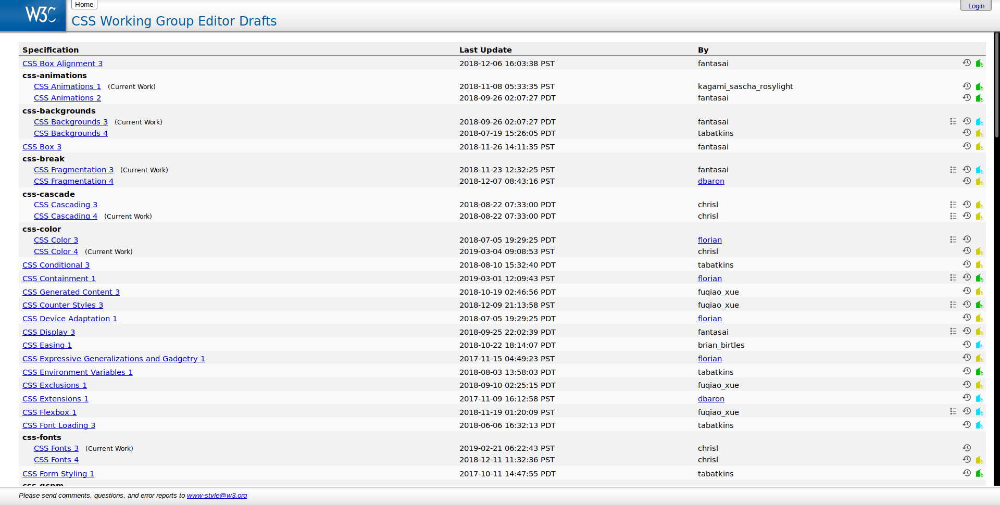
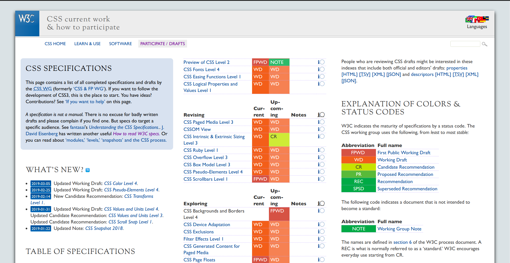
| FPWD | First Public Working Draft |
| WD | Working Draft |
| CR | Candidate Recommendation |
| PR | Proposed Recommendation |
| REC | W3C Recommendation |
| SPSD | Superseded Recommendation |
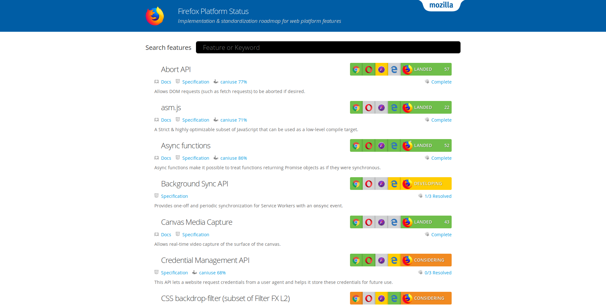
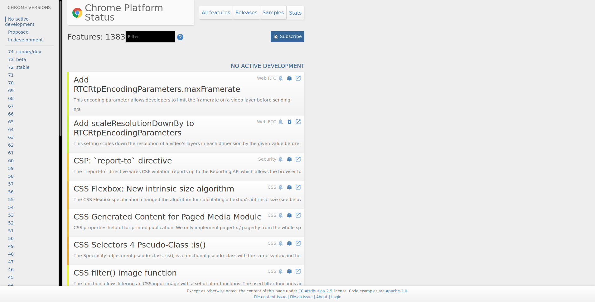
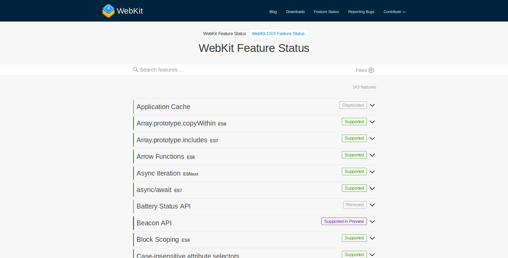
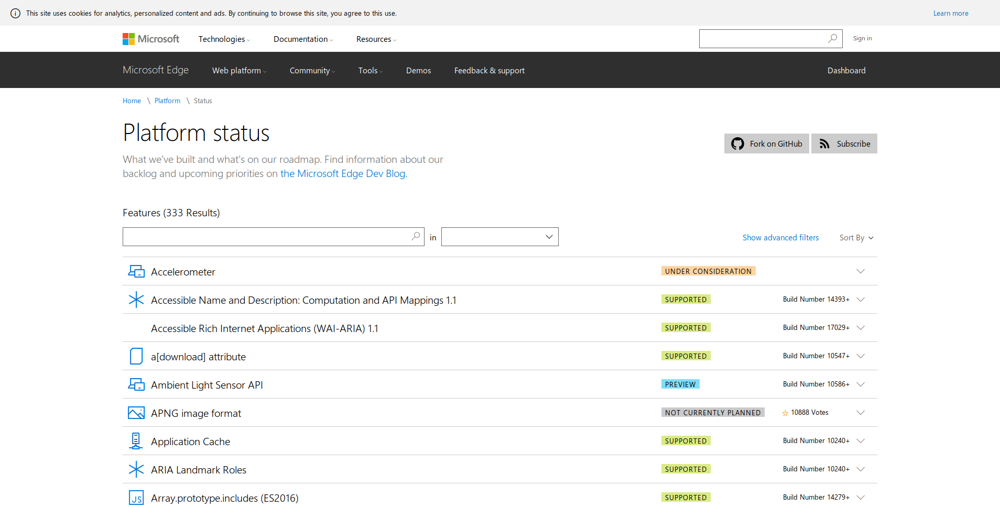
.car {
offset-path: path('M490,100 l 115,0 l 30,460 l -80,0 l 0,-300 q-70,-70 -76,-110 z');
offset-distance: 0;
offset-rotate: auto 90deg;
}
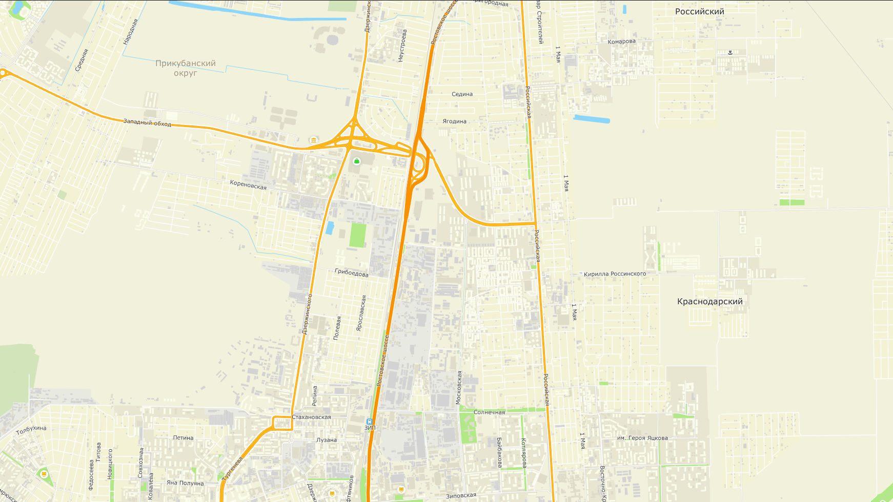
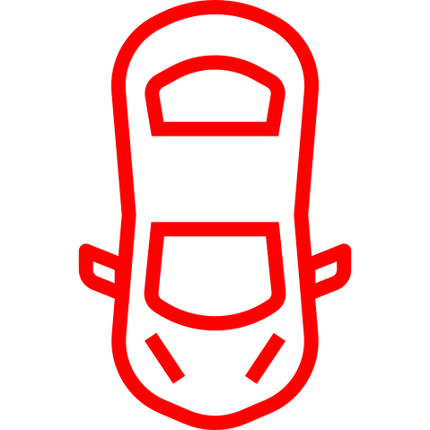
.car {
animation: move 8s linear infinite;
}
@keyframes move {
from {
offset-distance: 0;
}
to {
offset-distance: 100%;
}
}
| Edge | Firefox | Chrome | Safari |
|---|---|---|---|
| 16 | 63 | 71 | 11 |
| 17 | 64 | 72 | 11.1 |
| 18 | 65 | 72 | 12 |
| 66 | 73 | TP | |
| 67 | 74+ |
A (0, 0)
B (100%, 0)
C (100%, 100%)
D (0, 100%)
E (50%, 50%)
.shape {float: left;}
The shape is extracted and computed based on the alpha channel of the specified image as defined by shape-image-threshold.
User agents must use the potentially CORS-enabled fetch method defined by the [HTML5] specification for all URLs in a shape-outside value. When fetching, user agents must use "Anonymous" mode, set the referrer source to the stylesheet’s URL and set the origin to the URL of the containing document. If this results in network errors such that there is no valid fallback image, the effect is as if the value none had been specified.
.shape {float: left;shape-outside: circle(50% at 50% 50%);}
The shape is extracted and computed based on the alpha channel of the specified image as defined by shape-image-threshold.
User agents must use the potentially CORS-enabled fetch method defined by the [HTML5] specification for all URLs in a shape-outside value. When fetching, user agents must use "Anonymous" mode, set the referrer source to the stylesheet’s URL and set the origin to the URL of the containing document. If this results in network errors such that there is no valid fallback image, the effect is as if the value none had been specified.
.shape {float: left;shape-outside: polygon( 50% 0%, 100% 25%, 100% 75%, 50% 100%, 0% 75%, 0% 25% );}
User agents must use the potentially CORS-enabled fetch method defined by the [HTML5] specification for all URLs in a shape-outside value. When fetching, user agents must use "Anonymous" mode, set the referrer source to the stylesheet’s URL and set the origin to the URL of the containing document. If this results in network errors such that there is no valid fallback image, the effect is as if the value none had been specified.URL and set the origin to the URL of the containing document. If this results in network errors such that there is no valid fallback image, the effect is as if the value none had been specified.URL and set the origin to the URL of the containing document. If this results in network errors such that there is no valid fallback image, the effect is as if the value none had been specified.URL and set the origin to the URL of the containing document. If this results in network errors such that there is no valid fallback image, the effect is as if the value none had been specified.URL and set the origin to the URL of the containing document. If this results in network errors such that there is no valid fallback image, the effect is as if the value none had been specified.URL and set the origin to the URL of the containing document. If this results in network errors such that there is no valid fallback image, the effect is as if the value none had been specified.URL and set the origin to the URL of the containing document. If this results in network errors such that there is no valid fallback image, the effect is as if the value none had been specified.URL and set the origin to the URL of the containing document. If this results in network errors such that there is no valid fallback image, the effect is as if the value none had been specified.URL and set the origin to the URL of the containing document. If this results in network errors such that there is no valid fallback image, the effect is as if the value none had been specified.
| Edge | Firefox | Chrome | Safari |
|---|---|---|---|
| 16 | 63 | 71 | 11 |
| 17 | 64 | 72 | 11.1 |
| 18 | 65 | 72 | 12 |
| 66 | 73 | TP | |
| 67 | 74+ |
...
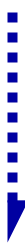
Block Flow
CSS Writing Modes Level 3 defines CSS support for various international writing modes, such as left-to-right (e.g. Latin or Indic), right-to-left (e.g. Hebrew or Arabic), bidirectional (e.g. mixed Latin and Arabic) and vertical (e.g. Asian scripts).
Text Flow
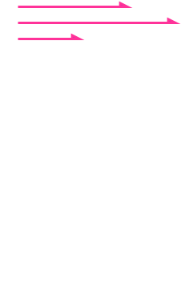
<article>
<h2>はだかの王さま</h2>
<p>城のまわりには町が広がっていました。...</p>
</article>
城のまわりには町が広がっていました。とても大きな町で、いつも活気に満ちていました。世界中のあちこちから知らない人が毎日、おおぜいやって来ます。
article {
writing-mode: vertical-rl;
}
城のまわりには町が広がっていました。とても大きな町で、いつも活気に満ちていました。世界中のあちこちから知らない人が毎日、おおぜいやって来ます。
| Edge | Firefox | Chrome | Safari |
|---|---|---|---|
| 16 | 63 | 71 | 11 |
| 17 | 64 | 72 | 11.1 |
| 18 | 65 | 72 | 12 |
| 66 | 73 | TP | |
| 67 | 74+ |
城のまわりには町が広がっていました。とても大きな町で、いつも活気に満ちていました。世界中のあちこちから知らない人が毎日、おおぜいやって来ます。
城のまわりには町が広がっていました。とても大きな町で、いつも活気に満ちていました。世界中のあちこちから知らない人が毎日、おおぜいやって来ます。
A criminal pleads insanity after getting into trouble again and once in the mental institution rebels against the oppressive nurse and rallies up the scared patients.
A former Roman General sets out to exact vengeance against the corrupt emperor who murdered his family and sent him into slavery.
block-start inline-start block-end inline-end| Физическое свойство | Логическое свойство |
|---|---|
| width | inline-size |
| height | block-size |
| min-width | min-inline-size |
| max-width | max-inline-size |
| min-height | min-block-size |
| max-height | max-block-size |
| Физическое свойство | Логическое свойство |
|---|---|
| margin-top | margin-block-start |
| margin-bottom | margin-block-end |
| margin-left | margin-inline-start |
| margin-right | margin-inline-end |
城のまわりには町が広がっていました。とても大きな町で、いつも活気に満ちていました。世界中のあちこちから知らない人が毎日、おおぜいやって来ます。
城のまわりには町が広がっていました。とても大きな町で、いつも活気に満ちていました。世界中のあちこちから知らない人が毎日、おおぜいやって来ます。
| Физическое свойство | Логическое свойство |
|---|---|
| top | inset-block-start |
| bottom | inset-block-end |
| left | inset-inline-start |
| right | inset-inline-end |
.absolute {
position: absolute;
inset-block-start: 0;
inset-inline-start: 0;
}
| Edge | Firefox | Chrome | Safari |
|---|---|---|---|
| 16 | 63 | 71 | 11 |
| 17 | 64 | 72 | 11.1 |
| 18 | 65 | 72 | 12 |
| 66 | 73 | TP | |
| 67 | 74+ |
.mixer-color {
mix-blend-mode: multiply;
}
239, 107, 142
0, 255, 255
0, 107, 142

.wsd-logo {
mix-blend-mode: difference;
}
Вычитает более темный из более светлого в контексте двух цветов
255, 255, 255
0, 0, 255
255, 255, 0
.circle {
mix-blend-mode: screen;
}
| Edge | Firefox | Chrome | Safari |
|---|---|---|---|
| 16 | 63 | 71 | 11 |
| 17 | 64 | 72 | 11.1 |
| 18 | 65 | 72 | 12 |
| 66 | 73 | TP | |
| 67 | 74+ |
.container {
scroll-snap-type: y mandatory;
}
.container section {
scroll-snap-align: center;
}
| Edge | Firefox | Chrome | Safari |
|---|---|---|---|
| 16 | 63 | 71 | 11 |
| 17 | 64 | 72 | 11.1 |
| 18 | 65 | 72 | 12 |
| 66 | 73 | TP | |
| 67 | 74+ |
let el = document.querySelector('.el');
el.style.opacity = 1
console.log(el.style.opacity) // "1"
let el = document.querySelector('.el');let styleMap = el.attributeStyleMap;styleMap.set('opacity', 1);console.log( styleMap.get('opacity') );// CSSUnitValue { value: 1, unit: "number" }
el.style.transform = `translate(100%,calc( 100vw + 10px ))`;
let styleMap = document.querySelector('.el').attributeStyleMap;let calc = new CSSMathSum( CSS.vw(100), CSS.px(10) );let transform = new CSSTransformValue(new CSSTranslate(CSS.percent(100),calc));styleMap.set( 'transform', transform );
CSS.supports('display', 'contents');
true
if ( window.CSS && CSS.number ) {// CSS Typed OM}
Теперь в JavaScript есть объектно-ориентированный API для работы с CSS свойствами. Дни конкатенации строк и плавающих багов подходят к концу!Эрик Бидельман
| Edge | Firefox | Chrome | Safari |
|---|---|---|---|
| 16 | 63 | 71 | 11 |
| 17 | 64 | 72 | 11.1 |
| 18 | 65 | 72 | 12 |
| 66 | 73 | TP | |
| 67 | 74+ |